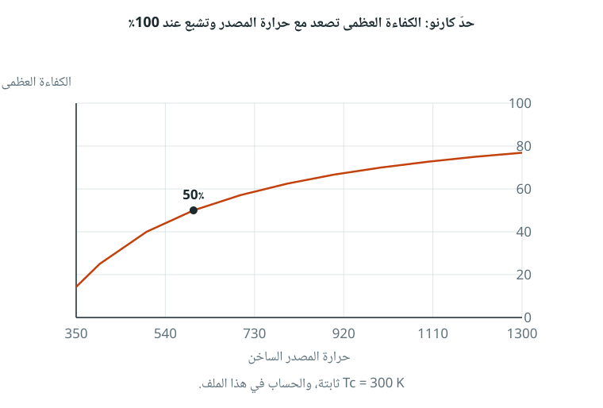

حدّ كارنو لكفاءة المحركات الحرارية
The Carnot limit: no heat engine reaches 100%
يحدد الفرق بين درجتي حرارة المصدر الساخن والمصرف البارد الحد الأعلى للكفاءة. وعند ثبات المصرف عند 300 كلفن، يرتفع الحد من 25٪ إلى 75٪ إذا ارتفعت حرارة المصدر من 400 إلى 1200 كلفن.
المحرك الحراري يأخذ حرارة من مصدر ساخن، يحوّل جزءاً منها إلى عمل، ويطرح الباقي إلى مصدر بارد. القانون الثاني يمنع طرح صفر: لا بد من مخرج حراري. حدّ كارنو يحسب أفضل نسبة ممكنة: الكفاءة العظمى تساوي واحداً ناقص نسبة الحرارة المطلقة للطرف البارد إلى الساخن. مع مخرج بارد عند 300 كلفن (حرارة الجو)، يعني مصدر عند 600 كلفن كفاءة 50٪ سقفاً؛ وعند 1200 كلفن 75٪. الرقم ليس تفصيلاً أكاديمياً: إنه يفسّر لماذا تُصمَّم التوربينات الغازية لتعمل عند حرارة دخول عالية جداً، ولماذا تُبرَّد المكثفات بكل هذا الجهد — تبريد المخرج من 320 إلى 300 كلفن يرفع السقف تلقائياً.
كيف تعمل الظاهرة؟
الإنتروبيا هي الحاكم. في دورة عكوسة يبقى مجمل تغيّر الإنتروبيا صفراً، فيكون Qc/Tc = Qh/Th، ومنه تُشتق الكفاءة 1 − Tc/Th. أي عملية غير عكوسة (احتكاك، خلط، فرق حرارة محدود) تُنتج إنتروبيا إضافية وتُبعد الكفاءة الفعلية إلى ما دون الحدّ.
العلاقة بالأرقام
بمخرج عند 300 كلفن: عند Th = 400 كلفن الكفاءة 25٪، وعند 600 كلفن 50٪، وعند 900 كلفن 66.7٪، وعند 1200 كلفن 75٪. المحركات الحقيقية تبلغ نحو نصف هذا السقف: محرك بنزين نموذجي حول 30٪، وتوربين غازي مركّب قد يقترب من 60٪ من السقف، والباقي يُطرح حرارةً في العادم والمكثف.
مفاهيم متقاربة
الكفاءة الحرارية ليست كفاءة «ميكانيكية» ولا نسبة من الوقود تُحرق بلا فائدة. الفقد ليس عطلاً بل شرط عمل: كل جول يمرّ في دورة يجب أن يُطرح جزء منه. من يطلب كفاءة 100٪ يطلب محركاً يخالف القانون الثاني، لا محركاً أفضل تصميماً.
حدود التطبيق
حدّ كارنو يفترض عملية عكوسة وحرارة ثابتة عند الطرفين. في الواقع درجات الحرارة تتغيّر داخل المبادلات، ويوجد فرق حراري محدود لنقل الحرارة، وضغوط وفقد ضغط. لهذا تُحسب الكفاءة العملية بدورات مثل رانكن أو برايتون، ويبقى حدّ كارنو سقفاً أعلى لا يُبلَغ.

| الكمية | القيمة | المصدر |
|---|---|---|
| الكفاءة العظمى مع Th = 600 كلفن وTc = 300 كلفن | 50 % | [1] |
| الكفاءة العظمى مع Th = 1200 كلفن وTc = 300 كلفن | 75 % | [1] |
| حرارة الجو المرجعية المستخدمة في الحساب | 300 K | [2] |
المصادر
- 1 NASA Glenn — Engine Thermodynamic Analysis — NASA. www1.grc.nasa.gov/beginners-guide-to-aeronautics/engine-thermodynamic-analysis/ · اطُّلع عليه 2026-11-16
- 2 OpenStax, College Physics 2e — The First Law of Thermodynamics — OpenStax. openstax.org/books/college-physics-2e/pages/15-1-the-first-law-of-thermodynamics · اطُّلع عليه 2026-11-16
راجعه: مراجعة آلية — ديوان المعرفة (أرقام محسوبة + مصادر متحققة) 2026-11-16 · 2026-11-16 · آخر تحديث 2026-11-17
رجوع إلى المقالات